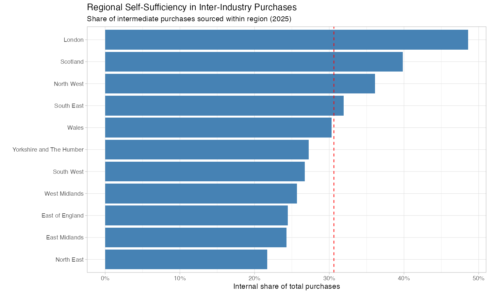
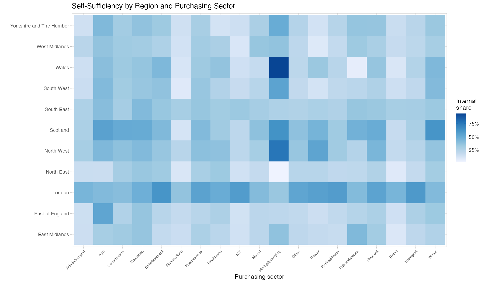
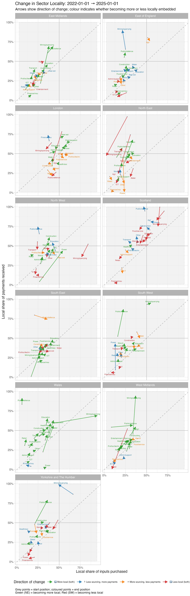

Inter-Industry Payment Flows: Regional Supply Chain Locality
Overview
This is a Claude-Code output.
This document presents key findings from an analysis of business-to-business payment flows between UK regions (ITL1), using HMRC inter-industry payment data at SIC section level, covering 2019–2025.
Rather than measuring what sectors produce or employ, this analysis reveals the intermediate supply chain structure behind each sector — where the money flows when businesses buy from each other. For each region, technical coefficients are calculated: the share of sector i’s total intermediate purchases that go to sector j, split into payments staying within the region (“internal”) versus leaving it (“external”).
Two summary measures are used throughout:
- Payer locality: Of all inputs purchased by a sector, what share is sourced from within the same region? (How locally does the sector buy?)
- Payee locality: Of all payments received by a sector from other sectors, what share comes from within the same region? (How locally is the sector served?)
Northern Ireland is excluded throughout due to its distinct cross-border payment dynamics.
Regional self-sufficiency in inter-industry purchases

The chart ranks GB regions by their overall supply chain self-sufficiency — the share of all inter-industry purchases that stay within the region (2025 data). The red dashed line marks the average across all regions.
London dominates at 45.9%, with nearly half of all B2B payments staying within the capital. This reflects London’s vast, dense service economy where many supplier–customer relationships can be satisfied internally. Scotland (32.1%) and the North West (27.6%) are the only other regions above 25%.
Yorkshire and The Humber sits at approximately 21.3%, placing it 6th out of 11 GB regions — squarely mid-table, in a cluster with Wales (22.0%), West Midlands (22.6%), and South West (20.6%). The North East (18.5%) and East Midlands (18.2%) are the least self-sufficient.
The self-sufficiency ranking broadly tracks region size and economic diversity. Y&H’s mid-table position is consistent with a region that has genuine economic breadth — manufacturing, finance, logistics — but lacks the critical mass of London, Scotland, or the North West.
Change over time: Y&H rose from 19.6% (2019) to 21.6% (2022) to 21.3% (2025) — a step up between 2019 and 2022 that has since plateaued. Wales and the North West showed stronger upward trends over the same period. Scotland actually declined slightly (33.2% to 32.1%).
Self-sufficiency by region and purchasing sector

This heatmap breaks down self-sufficiency by purchasing sector within each region. Darker blue indicates a higher share of that sector’s intermediate purchases sourced from within the region.
Several patterns stand out:
London is darker across almost every sector — its self-sufficiency advantage is not confined to one or two industries but reflects a structural density effect. Finance, ICT, professional services, and admin/support all show notably high internal shares in London compared to other regions.
Mining/quarrying shows high internal shares in several regions (notably Wales, Scotland, and Y&H) — physically heavy, geographically embedded sectors where proximity to the resource base forces local purchasing.
Scotland shows consistently moderate-to-high internal shares across most sectors, reflecting its position as a relatively self-contained economy — partly due to geography and partly due to the breadth of its industrial base.
Within Y&H specifically, the highest internally-sourced sectors are mining/quarrying (49.6%), agriculture (42.7%), education (37.4%), and public administration (36.0%). The lowest are health/social work (12.9%), power/energy (13.3%), and finance/insurance (14.6%).
The health/social work figure is particularly notable: at 12.9%, Y&H’s health sector is 17.9 percentage points below the UK regional mean (30.8%) — the single largest negative deviation of any Y&H sector. This suggests unusual dependence on supply chains reaching outside the region, possibly reflecting centralised NHS procurement patterns or a lack of local medical supply and pharmaceutical capacity.
Change in sector locality: 2019 to 2025

This arrow plot tracks how each sector’s position in the payer/payee locality scatter has shifted between 2019 and 2025, faceted by region. Each arrow runs from a sector’s 2019 position (grey point) to its 2025 position, with colour indicating the direction of change:
- Green (NE): becoming more local on both dimensions (sourcing more locally and receiving more local payments)
- Red (SW): becoming less local on both dimensions
- Orange (SE): more local sourcing but less local payment receipt
- Blue (NW): less local sourcing but more local payment receipt
The dominant pattern across all regions is toward greater locality. 60.3% of all sector–region combinations moved NE (green), while only 12.9% moved SW (red). This runs counter to a simple globalisation narrative of ever-more-dispersed supply chains. Possible explanations include post-COVID supply chain adjustments, cost pressures favouring shorter supply chains, or structural changes in how digital services affect the geography of intermediate transactions.
For Y&H specifically, the localisation trend is even stronger: 68.4% of sectors moved NE, with only 15.8% (3 sectors) moving SW. Key movements include:
- Public administration/defence shows the single largest shift in the entire dataset (+19.1pp on sourcing, +53.8pp on receiving), likely reflecting a structural change in how public sector procurement is recorded or operates in Y&H.
- Mining/quarrying became even more locally embedded (+11.8pp on sourcing), already from a high base.
- Construction (+4.1pp sourcing, +7.1pp receiving) and food/beverage service (+5.9pp sourcing, +7.4pp receiving) both moved substantially toward greater local embeddedness — consistent with the sector catalogue’s finding of growing specialised construction in South Yorkshire and strong food/beverage recovery post-COVID.
The three Y&H sectors moving away from locality were:
- Finance/insurance (−8.4pp on sourcing): Y&H’s finance sector, anchored by Leeds, is becoming less locally sourced even as it grows — consistent with increasing integration into national and international financial supply chains.
- Agriculture (−4.9pp on sourcing, −14.1pp on receiving): Y&H agriculture still sources relatively locally but is increasingly selling into non-local supply chains.
- Water/waste (−3.9pp on sourcing, −3.4pp on receiving): a modest retreat from locality.
Implications
The supply chain locality analysis adds a layer to the sector-level employment and GVA data. Sectors that are important local employers — retail, food service, accommodation — often have non-local intermediate supply chains, meaning that even where they create jobs and serve local customers, much of their purchasing leaves the region. Conversely, sectors with strong local supply chains (mining, agriculture, construction) may have smaller employment footprints but generate more circular local economic activity.
For Yorkshire and The Humber, the combination of mid-table self-sufficiency with a clear trend toward greater locality suggests a region whose internal supply chain linkages are strengthening — but from a position that still leaves roughly four-fifths of inter-industry spending flowing to other regions.